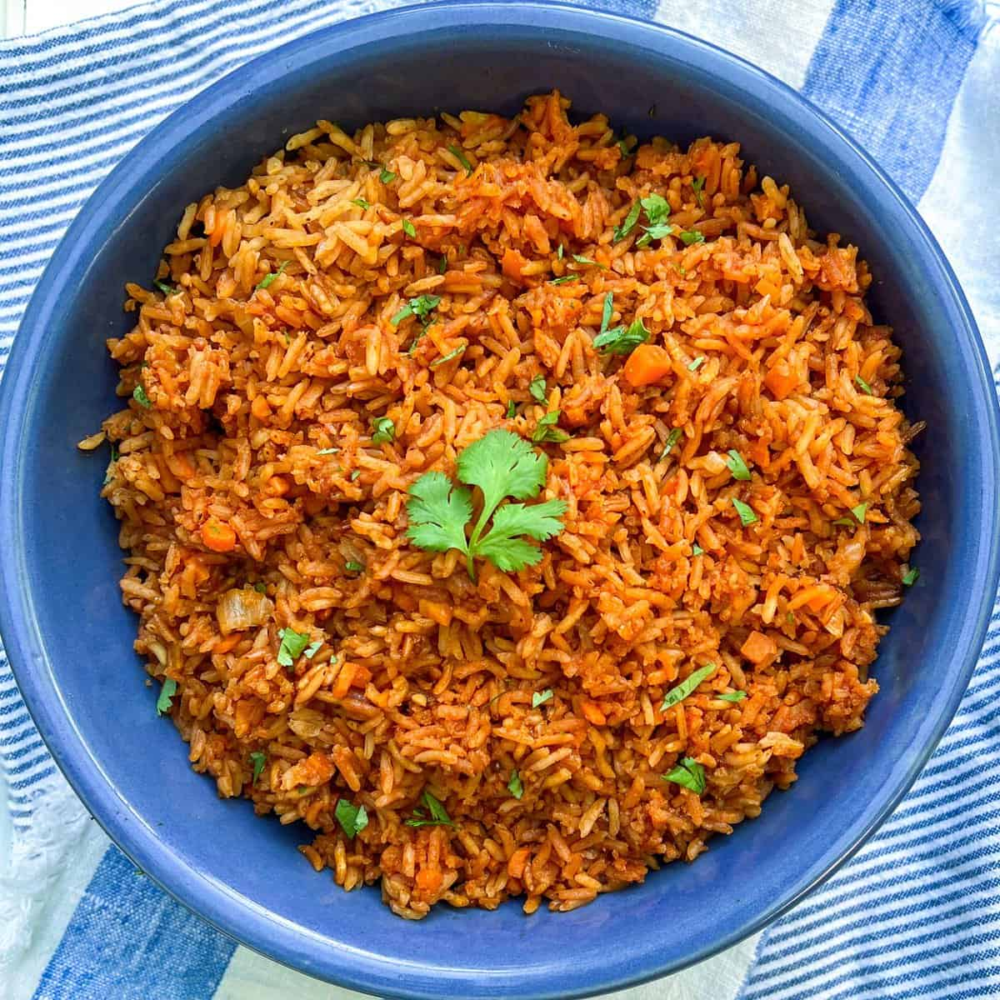

Rice

Description
This is a foolproof recipe for cooking Jollof rice, West Africa's most popular dish. I like to serve it as a side with
my West African-style grilled beef (Suya), but it can also be a main course.
Ingredients
- Tomato sauce
- Rice
- Pepper
- Chili
- Garlic
- Ginger
- Onion
- Paprika
- Spices
Steps
- Make the sauce
- Add ingredients and sauce to pan
- Cook rice
- Mix everything
- Cook for 5 more minutes